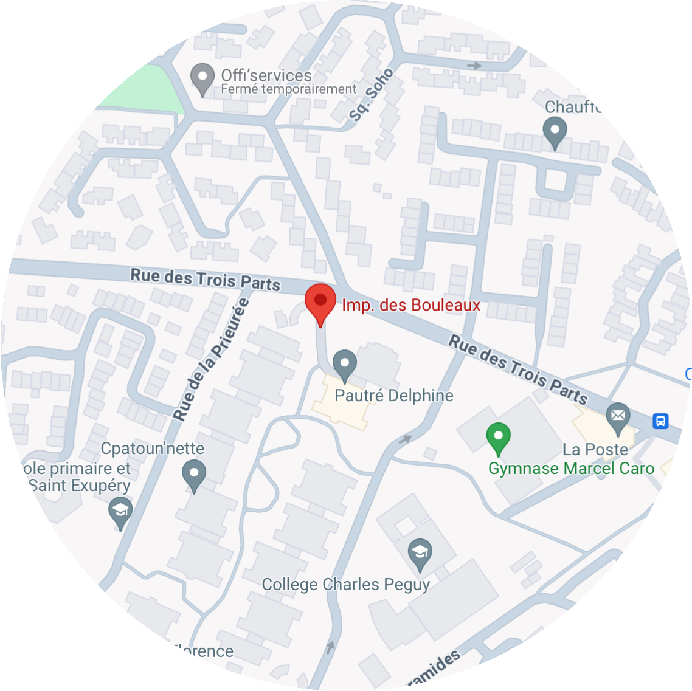
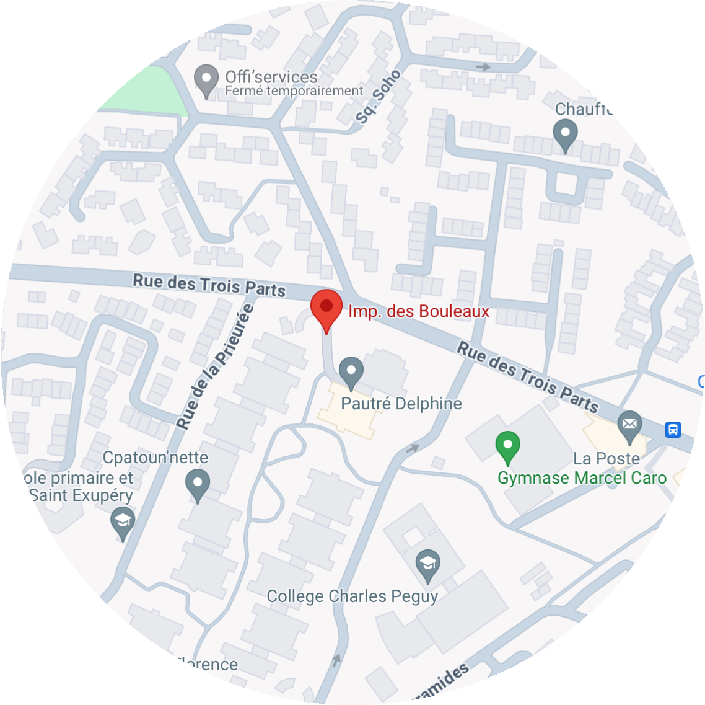

- Où nous trouver ?
Notre MAM se situe à l'adresse suivante : Impasse des Bouleaux, BONDOUFLE 91070

La MAM "Les Petits Picasso" est motivée par une aspiration commune de travailler en équipe, mais aussi de faire bénéficier à nos petits artistes, dans un lieu chaleureux, un mélange d'accueil familial et d'accueil collectif au sein d'une petite structure. Nous proposons une palette d'activités très large, une socialisation en douceur et une acquisition progressive de l'autonomie, dans un environnement sécurisé et adapté qui leur est entièrement dédié. Nous sommes deux assistantes maternelles, Patricia et Isabelle, soucieuses d'établir un triangle de confiance autour de vos petit Picasso : la confiance en lui, la confiance en nous, des parents en confiance.
Informations Nous contacter AvisNotre MAM se situe à l'adresse suivante : Impasse des Bouleaux, BONDOUFLE 91070
Voici quelque photos de notre MAM, de l'extérieur comme de l'intérieur.